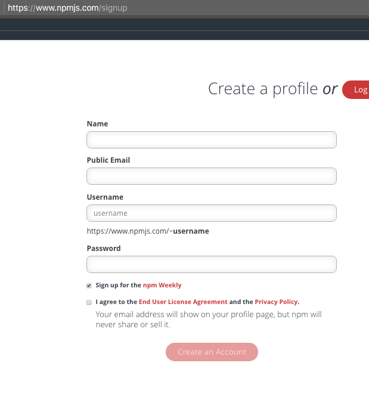

CommonJS Modules. Importación y Exportación
- Introducción a los Módulos en JS por Manz
- Talk NODE.JS module patterns using simple examples. Trasparencias. Muestra ejemplos/patrones de exportación-importación (Reveal Slides)
- Authoring CommonJS modules (CommonJS modules were conceived during the early days of server-side JavaScript environments such as node.js and Narwhal. As a result, CommonJS modules are optimized for these environments, not browser environments)
El comando npm
- A Beginner’s Guide to npm — the Node Package Manager
- npm
- 10 Tips and Tricks That Will Make You an npm Ninja
Ejercicio: Darse de alta en NPM
Para comenzar, crearemos una cuenta de usuario en el repositorio de NPM mediante la cual publicar nuestros propios paquetes:
- Abrir el navegador.
- Ir a https://npmjs.org
- Hacer clic en el enlace sign up
- Rellenar el formulario de alta:
- 
- Aceptar los términos de licencia.
- Hacer clic en el botón Create an Account para crear la cuenta.
- Una vez creada la cuenta, hay que abrir sesión con el servidor NPM para poder publicar paquetes en él. Abrir una consola.
- Conectar al repositorio:
$ npm login- Rellene los datos que le solicita.
- Consultar la cuenta con la que tenemos abierta la sesión:
$ npm whoami
Otra forma de darse de alta desde línea de comandos:
-
Ejecuta en la terminal estos comandos:
npm set init.author.name "Casiano Rodriguez-Leon" npm set init.author.email "whatever@gmail.com" npm set init.author.url "https://github.com/crguezl" -
El siguiente comando nos perdirá un email y una password, creando o verificando un usuario en el npm registry, y guardará el token en el fichero
~/.npmrc:npm adduser
Creación de Paquetes y Módulos en NodeJS
- Creating and Publishing a Node.js Module
- El paquete de ejemplo usado en este tutorial @ull-esit-dsi-1617/scapegoat en npm
- El paquete de ejemplo usado en este tutorial @ull-esit-dsi-1617/scapegoat en GitHub
Instalación desde GitHub
You can install packages directly from Github, and even specify a tag, sha, or branch if you want.
npm install https://github.com/ULL-ESIT-DSI-1617/scapegoat.git
npm install https://github.com/ULL-ESIT-DSI-1617/scapegoat.git#branch
must be https or git+ssh.
See How to install an npm package from GitHub directly? in StackOverflow
Publicación con ámbito en una organización:
[/tmp/scapegoat(master)]$ npm publish --access public
+ @ull-esit-dsi-1617/scapegoat@1.0.2
Scoped Packages
There are only two hard things in Computer Science: cache invalidation and naming things.
—Phil Karlton
Naming things is hard. It’s even harder when there are tens of thousands of other people who want to use the same names that you do. With hundred of thousands of modules on npm, it has been getting hard to find a name that isn’t taken.
Naming things just got a little bit easier for npm users with the introduction of scopes.
What are scopes?: Scopes are like namespaces for npm packages. Each npm user has their own scope.
@username/project-name
This means that you don’t have to worry about someone else taking your package name. Only you can add packages in your scope.
Scoped modules also make it possible to put your private code on npm when you sign up for private modules. With private modules, you have control over who can see and collaborate on any of the modules in your scope.
Public scoped packages are free. To create a scoped package, all you need to do is add your scope to the front of the name property in package.json and run npm with the access option:
npm publish --access=public
- Working with scoped packages
- npm-scope manual: Scoped packages
- Working with npm private modules. YouTube Video
Package.json
Ejemplo de package.json
[~/javascript/evalua-module/scapegoat(master)]$ pwd -P
/Users/casiano/local/src/javascript/evalua-module/scapegoat
[~/javascript/evalua-module/scapegoat(master)]$ tree -I 'node_modules|docs'
.
├── LICENSE-MIT
├── README.md
├── index.js
├── package.json
└── test
└── index.js
1 directory, 5 files
[~/javascript/evalua-module/scapegoat(master)]$ cat package.json
{
"name": "@ull-esit-dsi-1617/scapegoat",
"version": "1.0.4",
"description": "A small library providing utility methods to escape and unescape HTML entities",
"main": "index.js",
"scripts": {
"test": "./node_modules/.bin/mocha --reporter spec",
"doc": "documentation build index.js -f html -o docs"
},
"repository": {
"type": "git",
"url": "git@github.com:ULL-ESIT-DSI-1617/scapegoat.git"
},
"keywords": [
"escape",
"unescape",
"html"
],
"author": "Casiano Rodriguez <casiano.rodriguez.leon@gmail.com>",
"licenses": [
{
"type": "MIT",
"url": "https://github.com/ULL-ESIT-DSI-1617/scapegoat/blob/master/LICENSE-MIT"
}
],
"bugs": {
"url": "https://github.com/ULL-ESIT-DSI-1617/scapegoat/issues"
},
"devDependencies": {
"mocha": "*",
"chai": "*"
}
}
Semantic versioning and npm
- Semantic versioning and npm
- Semantic Versioning: Why You Should Be Using it SitePoint
- YouTube Video: Semantic versioning and npm
- El comando npm version
npm Organizations /npm Organizaciones
- Introduction
- Getting Started
- Roles and Privileges
- Managing Members
- The Developers Team
- Managing Teams
- Publishing an Org Scoped Package
- Configuring npm for your Org
- Managing Package Access
- Migrating a User Account
- Managing Billing
- Upgrading and Downgrading
- Renaming and/or Deleting an Org
Members of an Organization are immediately added to a Developers team that automatically has Read/Write access to all packages published under an Organization scope
- Publishing an Org Scoped Package
-
To create a new scoped package for your Organization scope, create a directory with the name of the package you would like to create. Navigate into that directory and use this command:
npm init --scope=<org_scope> -
By default all scoped packages are published privately. To publish a scoped package publicly, pass the access flag with the value public:
npm publish --access public
-
- The developers team
- The Developers Team is a special Team that is automatically created when you create an Organization.
- Members are automatically added to the Developers team:
- The user who created the Organization is added to this team automatically.
- Any member added to the Organization is also added to this team automatically.
- If an Owner adds a new Member to an Organization and does not want that Member to be on the Developers team, an Owner can remove them. (Learn more about managing teams).
- npm-team: Manage organization teams and team memberships
- npm-access: Set access level on published packages
NPM: Herramientas de ayuda: release-it
Release a new patch (increments from e.g. 1.0.4 to 1.0.5):
release-it
Release a patch, minor, major, or specific version:
release-it minor
release-it 0.8.3
You can also do a “dry run”, which won’t write/touch anything, but does output the commands it would execute, and show the interactivity:
release-it --dry-run
References: Tutorials
NPM: Video Tutoriales
Links to NPM docs: Getting Started
- What is npm?
- Installing Node.js and updating npm
- Fixing npm permissions
- Installing npm packages locally
- Using a package.json
- Updating local packages
- Uninstalling local packages
- Installing npm packages globally
- Updating global packages Uninstalling global packages11. Creating Node.js modules
- Publishing npm packages
- Semantic versioning and npm
- Working with scoped packages
- Using tags